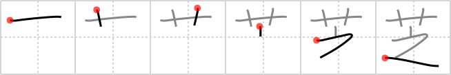

芝
← →
turf

Reading:
On-Yomi: シ — Kun-Yomi: しば
Heisig story:
Flowers . . . building blocks.
Koohii stories:
1) [bihzad] 13-3-2008(227): Zorro, with a flower between his teeth for the ladies, defends his turf against evildoers. "This is my turf! And this…is for the lady.".
2) [esaulgd] 5-10-2007(104): Artificial turf made easy: flowers stuck on top of building blocks that you can place anywhere.
3) [johnzep] 27-7-2007(27): ZORRO tried to plant FLOWERS but found his lawn was made of astro-TURF.
4) [mezbup] 8-6-2009(24): You know that when you see a flower bed in the shape of a Z that you're on Zorro's turf.
5) [aircawn] 13-12-2006(18): Ever seen turf rolled out like carpet on a new block? Here a roll of turf is unfurled and inside of it was Zorro with a flower in his mouth. Some people are just that smooth…